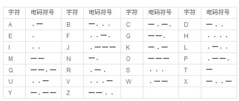
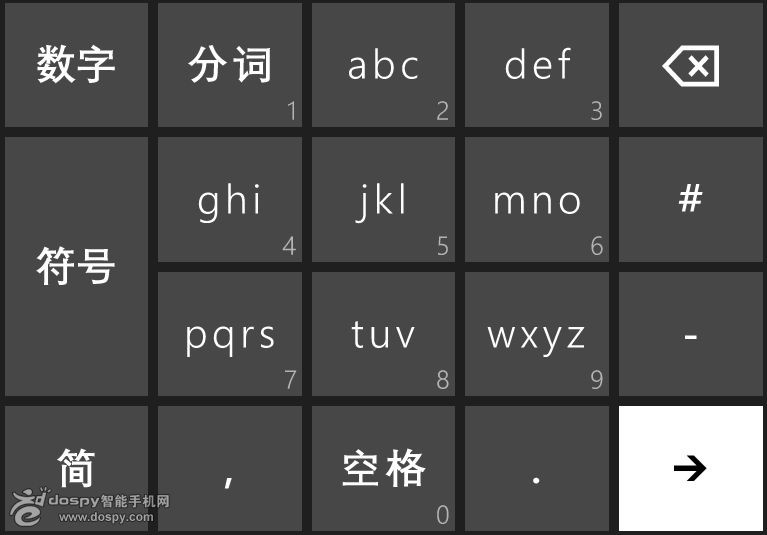
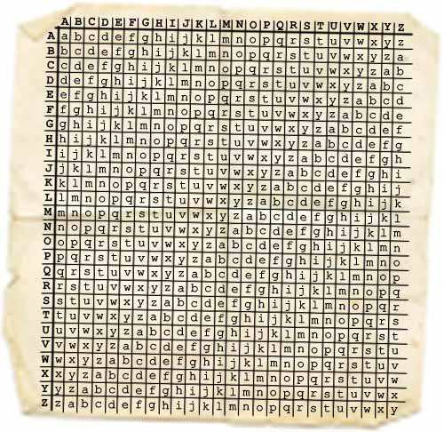

wo ne do cd na re hp ic gn iy al pe ra ew
提示：匾额
答案：从右向左重新排序
we are playing cipher and code now
特征：如果原文是拼音，则一般都会在末尾处留下一个声母音（如：wu中的w） 如果原文是英文，则一般都会大量出现“eht”这个词
23 08 01 20 09 19 20 08 05 19 13 01 12 12 05 19 20 18 15 15 13 09 14 20 08 05 23 15 18 12 04？
提示：字母表
答案：数字是字母在字母表中的序数
what is the smallest room in the world?
XPBJCFJKJOHUJBOBONFO
提示：字母表 换位
答案：单字母替换密码之 - 凯撒移位密码，用26位字母表全部往前移一位
WOAIBEIJINGTIANANMEN 我爱北京天安门
特征：统计字母出现频率，英文中出现频率较高的9个英文字母分别是：A、E、H、I、N、O、R、S、T
---/-*/*/ *--/*/*/-*-/ ****/*-/***-/*/ ***/*/***-/*/-*/ -**/*-/-*--/***/
提示：电报
答案：莫斯电码，1844年由莫尔发明的电报通信手段
ONE WEEK HAVE SEVEN DAYS
%53%68%65%20%73%65%6C%73%20%73%65%61%73%68%65%6C%6C%73%20%6F%6E%20%74%68%65%20
%73%65%61%73%68%6F%72%65%2E%20%45%67%2E%20%53%69%78%20%73%69%6C%6C%79%20%73%6C%65%65%70%65
%72%73%20%73%6C%65%70%74%20%73%6F%66%74%6C%79%20%6F%6E%20%73%69%6C%6B%20%73%68%65%65%74%73%2E
提示: URL
答案：
She sels seashells on the seashore. Eg. Six silly sleepers slept softly on silk sheets.
tcotl/hifhi/er_ef/_c__e/_l___/_e___/
提示: 栅栏密码
答案：the circle of the life
tcotl/
hifhi/
er_ef/
_c__e/
_l___/
_e___/
31104152 40502250215161904170 305112410281905091 80102250 10218150104052 8150915121225040 0251 10201041405141 50606051812091 0251 209040 605181 028050 51215231619030 7010315091
提示：分组 字母表
答案：Many developing countries have already resolved to abandon efforbs to bid for the olympic games.
观察发现每一个字符串都是由偶数个数字组成的，所以我们第一步要做的就是分组。
31 10 41 52 / 40 50 22 50 21 51 61 90 41 70 / 30 51 12 41 02 81 90 50 91 / 80 10 22 50 / 10 21 81 50 10 40 52 / 81 50 91 51 21 22 50 40 / 02 51 / 10 20 10 41 40 51 41 / 50 60 60 51 81 20 91 / 02 51 / 20 90 40 / 60 51 81 / 02 80 50 / 51 21 52 31 61 90 30 / 70 10 31 50 91
这样整理完后也就不难看出端倪了，该段文字是将字母转换为数字，再将数字颠倒次序而成的，
WYNBIUUUBNNOOGADWSOUEG
提示: 栅栏密码
答案：wo yong baidu wu suo bu neng
WYNBIUUUBNN
OOGADWSOUEG
2122827432 6333 7163913273 336373 7132737463622153 41214362
提示: 九宫格输入法
答案：Abuse of power for personal gain.
手机九宫格输入法，两个数字一组，第一位对应九宫格数字，第二位对应这个数字上的第几个字母。
特征：没有1开头，第二位最大是4（范围1-4）
6231 211222 123311718151513132 9142 516231 33621241523122
提示: 电脑键盘
答案：
先整理：
62 31 / 21 12 22 / 12 33 11 71 81 51 51 31 32 / 91 42 / 51 62 31 / 33 62 12 41 52 31 22
第一个数字有数字1，所以不是手机，第二个数字是1-3，所以判断是电脑键盘。
第一个数字代表横坐标（大键盘区的数字)，第二个数字代表纵坐标。
整理，完成：
He was acquitted of the charges.
(6,4)(1,4)(9,7) (6,4)(1,4)(9,7) (2,1)(7,7)(3,7) (2,1)(8,7) (5,7)(8,7)(1,4)(6,1) (5,7)(8,7)(1,4)(6,1) (2,1)(8,7)(1,4)(6,1)(5,4) (2,4)(6,4)(1,4)(6,1)(5,4)
提示: 电脑键盘
答案：键盘坐标（大键盘数字，小键盘数字）
hao hao xue xi
tian tian xiang shang
好好学习，天天向上。
9 1 d c 1 1a 19 13 f 13 f 12 12 19
提示: 16进制
答案：I am lazy so sorry 先由16禁止转为10禁止，然后找对应于字母表中的顺序。
T heo. Ly m p. I cga me.
提示: 重排
答案：去掉所有的非字母的字符，然后重新排列。
The Olympic Game
WEF LCOE MET TOBB BCC ANF DWELG COT MEU TOHJ AVEM FUC NB
提示: 去尾重排
答案：简单的说就是去掉每一个单词的最后一个字母：
WE LCO ME TOB BC AN DWEL CO ME TOH AVE FU N
然后去掉空格：
WELCOMETOBBCANDWELCOMETOHAVEFUN
Welcome to BBC and welcome to have fun.
SZMTASLF HSR TV SZL WR UZMT
提示: 埃特巴什码
答案：埃特巴什码（Atbash Cipher）是一个系统：最后一个字母代表第一个字母，倒数第二个字母代表第二个字母。
在罗马字母表中，它是这样出现的：
常文：A B C D E F G H I J K L M N O P Q R S T U V W X Y Z
密文：Z Y X W V U T S R Q P O N M L K J I H G F E D C B A
Hangzhou shi ge hao di fang
uSiiE XXDFE cETvb RTnAQ gVNKe
提示: 培根密码
答案：培根密码借由二进制的方式来代替字母，并以a和b来代表二进制中的0和1.
A aaaaa B aaaab C aaaba D aaabb E aabaa F aabab G aabba H aabbb I abaaa J abaab
K ababa L ababb M abbaa N abbab O abbba P abbbb Q baaaa R baaab S baaba T baabb
U babaa V babab W babba X babbb Y bbaaa Z bbaab
这里用大写字母代表a,小写字母代表b
water
2613 122122 213311171815151323 1924 152613 33262114251322
提示: 2层 电脑键盘
答案：
先整理：
26 13 / 12 21 22 / 21 33 11 17 18 15 15 13 23 / 19 24 / 15 26 13 / 33 26 21 14 25 13 22
因为第二位数字出现了大数7，8，9所以试着倒叙得到
62 31 / 21 12 22 / 12 33 11 71 81 51 51 31 32 / 91 42 / 51 62 31 / 33 62 12 41 52 31 22
整理，完成：
He was acquitted of the charges.
NNEOH YJUASZLO
提示: 维吉尼亚密码 密钥--java
答案：维吉尼亚密码引入了“密钥”的概念，即根据密钥来决定用哪一行的密表来进行替换，以此来对抗字频统计。
密码表
Enjoy yourself
javaj avajavaj
NNEOH YJUASZLO